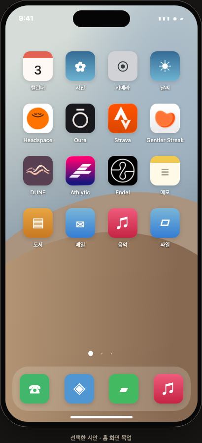
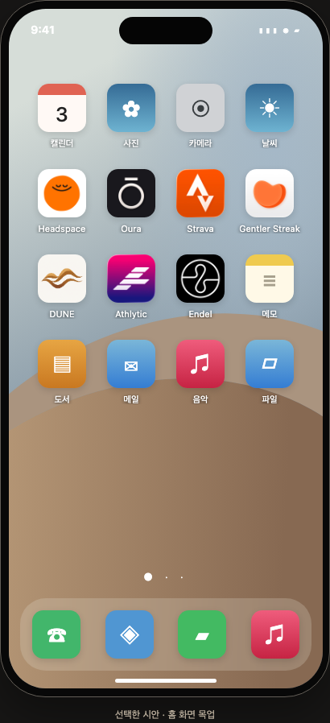

D · 홈 화면 비교 / 연결과 여백51싱글 브레스
DUNE · 골드
52오픈 오빗
OCEAN · 시안
53인터리브
FOREST · 세이지

54브리지 갭
SAKURA · 피치
55듀얼 페이즈
ARCTIC · 민트
56네거티브 플로
DUNE · 골드

57커넥티드 레벨
CONTOUR · 라임
58크로스 리듬
WATER LILIES · 라일락

59컷 아웃 웨이브
DUNE · 아이보리
60엣지 커넥트
MONO · 아이보리